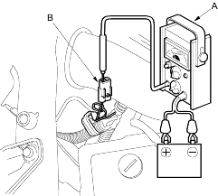

- Leave the Idle Air Control (IAC) valve connected.
- Before checking the idle speed, check these items:
- The Malfunction Indicator Lamp (MIL) has not been reported on.
- Ignition timing
- Spark plugs
- Air cleaner
- PCV system
- Disconnect the Evaporative Emission (EVAP) canister purge valve 2P connector (except D15Y3 (PA, KW, KT, KN models), D16W9 (PA model), D17A5 (KN model) engines).
- Connect a tachometer (A) to the test tachometer connector (B).

- Start the engine. Hold the engine at 3,000 rpm with no load (in Park or neutral) until the radiator fan comes on, then let it idle.
- Check the idle speed with no-load conditions: headlights, blower fan, radiator fan, and air conditioner are not operating.
Idle speed should be:
D15Y5, D15Y2, D16W8, D17A1, D17Z1, D17Z2, D17Z5, D17A2, D17Z3 engines: M/T 720+50 rpm (min-1) A/T, CVT 720+50 rpm (min-1) (in Park or neutral)
except D15Y5, D15Y2, D16W8, D17A1, D17Z1, D17Z2, D17Z5, D17A2, D17Z3 engines: M/T 750+50 rpm (min-1) A/T, CVT 750+50 rpm (min-1) (in Park or neutral)
- Idle the engine for 1 minute with heater fan switch on HI and air conditioner on, then check the idle speed.
Idle speed should be:
| D15Y5, D15Y2, D16W8, D17A1, D17Z1, D17Z2, D17Z5, D17A2, D17Z3 engines: | |
| M/T | 720+50 rpm (min-1) |
| A/T, CVT | 720+50 rpm (min-1)
(in Park or neutral) |
| except D15Y5, D15Y2, D16W8, D17A1, D17Z1, D17Z2, D17Z5, D17A2, D17Z3 engines: | |
| M/T | 750+50 rpm (min-1) |
| A/T, CVT | 750+50 rpm (min-1)
(in Park or neutral) |
NOTE: If the idle speed in not within specification, see Symptom Chart.
- Reconnect the EVAP canister purge valve 2P connector (except D15Y3 (PA, KW, KT, KN models), D16W9 (PA model), D17A5 (KN model) engines).